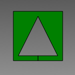
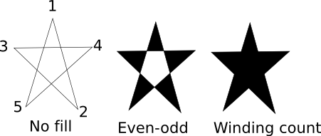

Please note: this article is part of the older "Objective-C era" on Cocoa with Love. I don't keep these articles up-to-date; please be wary of broken code or potentially out-of-date information. Read "A new era for Cocoa with Love" for more.
5 ways to draw a 2D shape with a hole in CoreGraphics
In this post, I look at 5 different ways that you can draw a very simple shape: a square with a triangular hole cut out of the center. In a drawing environment like CoreGraphics which offers double buffering, winding count path filling, even-odd path filling and clipping regions, there's no single answer. An iPhone sample project is provided containing the code but all drawing functions are identical on the Mac.
Introduction
This post will look at different ways to draw the following shape:
This is a very simple shape but it requires a non-simple topology: you must cut the center out of the shape to draw it. This post will look at 5 different ways that this can be done and the advantages or disadvantages with each.
To make the explanations easier, I've named each of the coordinates used to draw the shape:
// Coordinates are:
//
// A-------------B A(0,0), B(100,0), C(100,100), D(0,100)
// | E | E(50,10), F(10,90), G(90,90)
// | / \ | H(50,90), I(50,100)
// | / \ |
// | / \ |
// | F---H---G |
// D------I------CTechnique 1: overpainting
The most naive approach to drawing the shape is to draw the square (ABCD) in the shape's color and then draw the triangle (EFG) over the top in the color of the background.
To be clear though: this is an example of a technique that you should not use.
// Technique 1: overpaint
CGContextMoveToPoint(context, Ax, Ay);
CGContextAddLineToPoint(context, Bx, By);
CGContextAddLineToPoint(context, Cx, Cy);
CGContextAddLineToPoint(context, Dx, Dy);
CGContextAddLineToPoint(context, Ax, Ay);
CGContextSetRGBFillColor(context, 0.5, 0, 0, 1);
CGContextFillPath(context);
CGContextMoveToPoint(context, Ex, Ey);
CGContextAddLineToPoint(context, Fx, Fy);
CGContextAddLineToPoint(context, Gx, Gy);
CGContextAddLineToPoint(context, Ex, Ey);
CGContextSetRGBFillColor(context, 1, 1, 1, 1);
CGContextFillPath(context);Advantages: if you're only familiar with the "painter's algorithm" (everything is just painted over the top of everything else) then this might be the easiest concept to understand.
Disadvantages: if your background changes, the effect won't work.
This approach also has the problem that the pixels within the triangle of the image are drawn twice in the offscreen buffer (once in the square's color and once in the background color). If you are drawing a very large number of shapes this way, this overdrawing will be slower than not drawing the center pixels in the first place.
Technique 2: false hole
Another attempt to cheat when drawing this shape would be to draw the shape as a single, simple polygon — i.e. cut the shape along the line segment between H and I and draw it like a horseshoe (ABCI then HGEFH then finish with IDA).
Again, this is an example of a technique that you should not use.
// Technique 2: false hole
CGContextMoveToPoint(context, Ax, Ay);
CGContextAddLineToPoint(context, Bx, By);
CGContextAddLineToPoint(context, Cx, Cy);
CGContextAddLineToPoint(context, Ix, Iy);
CGContextAddLineToPoint(context, Hx, Hy);
CGContextAddLineToPoint(context, Gx, Gy);
CGContextAddLineToPoint(context, Ex, Ey);
CGContextAddLineToPoint(context, Fx, Fy);
CGContextAddLineToPoint(context, Hx, Hy);
CGContextAddLineToPoint(context, Ix, Iy);
CGContextAddLineToPoint(context, Dx, Dy);
CGContextAddLineToPoint(context, Ax, Ay);
CGContextSetRGBFillColor(context, 0, 0.5, 0, 1);
CGContextFillPath(context);Advantages: avoids the previous problem of the background being overdrawn in the wrong color.
Disadvantages : contains extra edges which won't draw correctly if you attempt to stroke the shape.
This approach can also suffer from precision problems: if the cut at the bottom does not actually overlap, it may be visible as a gap in the object when drawn at very high resolutions (for example on the Mac once resolution independence becomes user settable and objects can be drawn at unexpected sizes).
Technique 3: Winding count
This is the first of the correct approaches to drawing a hole in a path and uses the "winding count" polygon interior algorithm to label the inside of the triangle as "outside" the bounds of our path.
Winding count is the default way that CoreGraphics determines if a pixel is inside or outside a path. It works like this:
- CoreGraphics draws every horizontal row within the path's bounding rectangle from left-to-right
- At the start of each row, CoreGraphics sets the winding count for the shape to zero.
- If CoreGraphics crosses a line in the shape at any point during the row, it notes if the line was going upwards or downwards at the point where CoreGraphics crossed it.
- An upward line increases the winding count of the shape by 1.
- A downward line decreases the winding count of the shape by 1.
- If the winding count for the shape is ever non-zero (positive or negative) then pixels are filled according to the color of the shape.
If that's a little hard to follow then the simple description of winding count is:
Simple winding count: If a boundary is drawn clockwise, then a counter-clockwise boundary inside it will switch the shape off. If a boundary is drawn counter-clockwise, then a clockwise boundary inside it will switch it off.
This is how we use winding count to draw the shape:
// Technique 3: winding count fill rule
CGContextMoveToPoint(context, Ax, Ay);
CGContextAddLineToPoint(context, Bx, By);
CGContextAddLineToPoint(context, Cx, Cy);
CGContextAddLineToPoint(context, Dx, Dy);
CGContextAddLineToPoint(context, Ax, Ay);
CGContextClosePath(context);
CGContextMoveToPoint(context, Ex, Ey);
CGContextAddLineToPoint(context, Fx, Fy);
CGContextAddLineToPoint(context, Gx, Gy);
CGContextClosePath(context);
CGContextSetRGBFillColor(context, 0.5, 0.0, 0.75, 1);
CGContextFillPath(context);The ABCD boundary is clockwise, so the counter-clockwise EFG creates a hole. To start the inner boundary, we just close the first boundary and move to the next (all boundaries become part of the current path).
Advantages: genuinely draws a shape with a hole cut out of it.
Disadvantages: accidentally draw the inner shape in the order EGF and it won't work (clockwise plus clockwise leads to a winding count of 2 — which is still non-zero and the shape will still be filled.
Winding counts require a little extra effort to ensure that directions are maintained at all times.
Technique 4: Even-odd paths
Even-odd is the other rule used for paths in CoreGraphics. The rule is a little simpler to explain than winding count: in even-odd, the outmost boundary begins the object, the next outermost turns it off again, and so on for other nested paths.
The code is very similar to the winding count version except that we fill using CGContextEOFillPath and the order of EFG with respect to ABCD does not matter.
// Technique 4: even-odd fill rule
CGContextMoveToPoint(context, Ax, Ay);
CGContextAddLineToPoint(context, Bx, By);
CGContextAddLineToPoint(context, Cx, Cy);
CGContextAddLineToPoint(context, Dx, Dy);
CGContextAddLineToPoint(context, Ax, Ay);
CGContextClosePath(context);
CGContextMoveToPoint(context, Ex, Ey);
CGContextAddLineToPoint(context, Fx, Fy);
CGContextAddLineToPoint(context, Gx, Gy);
CGContextClosePath(context);
CGContextSetRGBFillColor(context, 0.75, 0.5, 0, 1);
CGContextEOFillPath(context);Advantages: less prone to ordering issues than winding count.
Disadvantages: there are some situations where winding count may give a better result. Consider the following pentagram drawn in a single continuous path 12345.
In this case, if you actually wanted to fill the center of the shape, you'd need to use winding count (the shape is drawn in a continuous clockwise direction so the winding count is always positive).
Technique 5: Clipping region
The final approach that I'll show is using a clipping region to remove the triangle at the center of the shape from the enabled drawing region.
// Technique 5: remove the inner hole using a clipping region
CGContextSaveGState(context);
CGContextAddRect(context, CGContextGetClipBoundingBox(context));
CGContextMoveToPoint(context, Ex, Ey);
CGContextAddLineToPoint(context, Fx, Fy);
CGContextAddLineToPoint(context, Gx, Gy);
CGContextClosePath(context);
CGContextEOClip(context);
CGContextMoveToPoint(context, Ax, Ay);
CGContextAddLineToPoint(context, Bx, By);
CGContextAddLineToPoint(context, Cx, Cy);
CGContextAddLineToPoint(context, Dx, Dy);
CGContextAddLineToPoint(context, Ax, Ay);
CGContextSetRGBFillColor(context, 0, 0, 0.5, 1);
CGContextFillPath(context);
CGContextRestoreGState(context);You can see that this approach is actually quite complicated since a clipping region with a hole requires the same effort as a shape with a hole: I subtracted the triangle from the clipping region's bounding rectangle using an even-odd clipping rule.
Advantages: a clipping region can subtract or cut very complicated shapes — even clusters of shapes — very simply.
Disadvantages: for cutting a single shape like this, the extra effort required to save the old graphics state and restore it after we're done, plus the fact that the clipping region is just as complicated as the shape itself, makes this approach more effort than the previous two.
Conclusion
You can download the code for drawing these shapes here: GraphicalSubtraction.zip (25kB)
A very simple shape but you can draw it in some very different ways. As you can see, the "wrong" ways of solving the problem don't actually save any code — the proper solutions are roughly the same length.
The best ways to solve this problem are to use the even-odd or winding count approaches. While the shape might look like the center is clipped out, the clipping region turns out to be more work and non-rectangular clipping regions are actually more computationally difficult as well.
A look at how malloc works on the Mac
Handling unhandled exceptions and signals